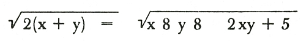
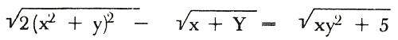
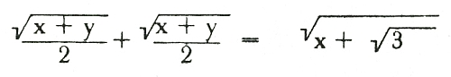
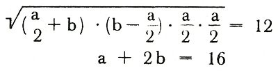

Seděl jsem na lavičce pod skokanským můstkem a dělal jsem, že se dívám na lidi v bazénu. Voda v bazénu byla zelená a průhledná a přes vysoké okno z mléčného skla hustě létaly drobné stíny. Venku sněžilo, svítilna v pasáži vrhala stíny sněhových vloček na mléčné sklo. Lázně hlaholily ječením holek, které kluci stahovali za nohy pod hladinu, a na protější straně bazénu seděla Irena se Zdeňkem a mlčeli. Díval jsem se, čekal jsem, co bude. Irena cákala nohama v zelené vodě, rukama se opírala o bílé kachlíky, opálená stehna měla trošku, ale příjemně rozpláclá a bylo jí vidět hluboko za ňadra. Zdeněk si románově hryzal spodní ret. Bylo mi jasné, že se pohádali.
Nalevo pod stínohrou na oknech vyšvihla se Marie Dreslerová z bazénu, ale někdo ji chytil za nohy. Zůstala ležet na břiše a přidržela se malé spáry mezi kachlíky. Modré plavky se jí zařezávaly do rozkroku a lemovala je tam bílá kůže poodhalené zadničky. Marie ječela, ale Kočandrle, který ji držel za kotníky, nepustil. Jela pomalu ňadry po bílých dlaždičkách, až spadla nazpátek. Všude panovala všeobecná zábava.
Podíval jsem se znova na Irenu, a Zdeněk už tam nebyl. Rychle jsem se ohlédl ke kabinám. Mizel právě v jedné z nich a hlasitě za sebou práskl dveřma. Opuštěná Irena seděla sama na kraji bazénu, čuměla do vody a pravou rukou se drbala na levém rameni. Předloktím si přitom stiskla ňadra a ve výstřihu se jí udělala nádherná pěšinka.
* * *
Čekal jsem na ni v portálu dveří Městské knihovny a vločky se hustě sypaly kuželem modrého světla nad vchodem do lázní. Na chodníku ležel už hustý, načechraný, běloskvoucí koberec a jiskřil, jako kdyby do něho namíchali drobné brilantky. Irena se objevila v zeleném zimníčku s hnědým šátkem na hlavě a s hnědou aktovkou v podpaží. Na chviličku se zastavila a zapla si zimníček ke krku. Vynořil jsem se ze stínu a řekl jsem:
„Ahoj, duše!“
„Ahoj, Danny,“ obrátila na mě velké hnědé oči, které se jako vždycky smály. Na velké truchlení kvůli Zdeňkovu elegantnímu odchodu z plovárny to nevypadalo.
„Můžu tě doprovodit?“
„Klidně,“ řekla. Zařadil jsem se vedle ní a šli jsme rychle v chumelenici a na ramenou a na hlavách se nám dělaly malé sněhové závěje. Byla skoro tma, zatemněné lucerny vrhaly na ulici jenom bleďoučké přeludy namodralého světla, ale bílý koberec sněhu naplňoval ulici krásným přísvětlím.
„Ty seš krásná, Ireno,“ řekl jsem bez rozpaků. Byly doby, kdy mi dělalo problém, jak začít. Asi v kvartě jsem objevil, že je to jedno. Tak jsem řekl rovnou:
„Ty seš krásná, Ireno!“
„Copak chceš?“
„Co?“
„Co chceš?“
„Jak to?“
„Že řikáš, že sem krásná.“
„Dyť je to pravda.“
„Neni. A co chceš?“
Pravil jsem nezištně, protože v tom momentě mi opravdu stačilo, že s ní jdu.
„Nic nechci.“
„Lžeš!“
„No fakt!“
„Lež jako věž,“ řekla Irena. „Já tě znám. Ty dycky něco chceš.“
„Já? Dycky? Jedině že chci dycky bejt v tvý blízkosti, Ireno. Jinak nic.“
„Jo nic! Právě že to ti nikdy nestačí.“
Měla pravdu. Jenomže komu by to taky stačilo. Jedině mně, pomyslel jsem si trpce. Poněvadž mně muselo.
„Nestačí,“ řekl jsem. „Já tě miluju, víš?“
„To je vod tebe hezký.“
„Ale vod tebe to neni hezký.“
„Co? Co neni vode mě hezký?“
„Tohle.“
„Co tohle?“
Nojo, co vlastně? Že mě, aspoň zatím, odmítá. Na odmítání mají holky právo. Ale hezký to od nich stejně není. Obzvlášť když to nedělají důsledně. Jako právě Irena. Omezil jsem se pouze na vyčítavé:
„Já tě miluju, a ty –“
„Já tě taky mám ráda.“
„To je ohromný!“
„A neni snad?“
„Neni. Ty to jenom řikáš.“
„Neřikám. Je to fakt.“
„Víš, jak stojí v bibli?“
„Nevim. Co?“
„Podle skutků jejich poznáte je.“
„Já dělám fůru skutků,“ řekla. „Copak tohle neni skutek, že s tebou jdu?“
„Je,“ ušklíbl jsem se trpce. „Ale skutek milosrdenství. Na tamto sou jiný skutky.“
„Jenže na ty zas je desatero božích přikázání.“
„Že ty je tak dodržuješ, Ireno!“
„A ty jo?“
„No – přesně ne.“ Dostal jsem nápad. „Dyž mám někoho rád, tak je nedodržuju. Zásadně.“
„Já je zas zásadně dodržuju.“
„Dyž máš někoho ráda?“
Nevěděla jak dál. V teologii na mě nestačila. Býval jsem až do kvarty nejlepší ministrant a důstojný pán Meloun se mnou nápadně zaváděl řeč na seminář. Skoro mě to lákalo, jenomže v kvartě se mi začaly líbit holky. Irena si to mezitím srovnala v hlavě a řekla:
„Ano. Ponivač nechci bejt pokušení ke hříchu.“
„To seš stejně, ať chceš nebo nechceš,“ řekl jsem. „A mimoto kecáš.“
„Houby.“
„Co třeba Zdeněk?“
„Ten – to je něco jinýho.“
„Mně připadá úplně stejnej jako já.“
„Až na to, že neni jako ty v tom hlavním.“
„Ne? A v čem?“
„Neběhá za každou.“
„Já snad běhám za každou?“
„Skoro za každou.“
Takovou jsem měl pověst, to byl fakt. A byl jsem v tom ne poměrně nevinně. Nasadil jsem tragický výraz. Šli jsme zrovna kolem Granady, kde pod modrou žárovkou na rohu stál německý voják. Za Granadou se táhlo volné prostranství k nádraží a na nádraží najednou vyšlehl otevřený plamen z lokomotivy a ozářil hustě padající vločky. Sypaly se z výšky, tmou, a měkce dopadaly na ulici a na Ireninu hnědou hlavičku. Mlčel jsem, dokud jsme nepřešli kolem vojáka. Voják se za náma otočil, zřejmě učinil pokus kouknout se Ireně na nohy. Moje kroky vrzaly v čerstvém sněhu.
„Za každou!“ pravil jsem jako trpce. „A nevíš asi proč, Ireno? Zrovna ty nevíš proč?“
„Ponivač seš sukničkář.“
„A nevíš proč?“
„Ne,“ řekla. „Prostě seš. Některý kluci sou takoví. Já neřikám, že za to můžeš.“
„Já za to taky nemůžu.“
„Jenže to tě nevomlouvá.“
„Ale tebe taky ne.“
„Mě? Jak to mě?“
„No tebe. Nedělej, že nevíš proč.“
„To nevim, teda.“
„Lež jako věž,“ opakoval jsem po ní. Neřekla nic. Věděla dobře, proč jsem sukničkář. Nebo, přesně řečeno, myslela si, že to ví. Byla dost důvěřivá. Když jsem jí řek, že ji miluju, věřila tomu do písmenka. A já ji opravdu miloval. Ovšem –
„Lež jako věž,“ řekl jsem ještě jednou. „Ty dobře víš proč, Ireno, a vidíš, jaká seš.“
„Jaká? Já to nevim. Řekni mi to!“
„Ale dyť to víš.“
„Ani moc ne, věříš?“
„Ne? Tak já ti to řeknu, dyž chceš: krutá a bezcitná.“
„To neni pravda,“ řekla.
„Je.“
„Náhodou seš vedle.“
„Nejsem. Tobě je úplně jasný, co na tobě chci, a přitom mi pokaždý dáš košem.“
„Seš úplně, ale úplně vedle,“ pravila Irena trochu záhadně. Jenže já se úspěšně potápěl do slovního žalu a nedošlo mi nic. Šli jsme přes bílou planinu za nádražím k řece a byli jsme tu první. Pláň před námi ležela netknutá, umetená, a my jsme za sebou nechávali dvě řady stop.
„Pokaždý, Ireno,“ řekl jsem. „Dáš mi košem a bude ti úplně fuk, že mně je na umření. Že jo?“
Mlčela.
„Že jo?“ dorážel jsem. „Jsi krutá a bezcitná a já tě miluju a ty to víš a stejně mi dáš košem.“
„A co dyž nedám?“ řekla.
Vyrazilo mi to dech.
„Co?“
„Máš uši, ne?“
Civěl jsem na ni úplně neinteligentně. „Mám. Ale nějak jsem ti nerozuměl,“ řekl jsem a žvanil jsem honem dál, abych se z toho leknutí vzpamatoval. „Budu se na to muset podívat do slovníku, co to znamená. Povídalas vopravdu: Nedám?“
„No.“
„Nedáš!“ pronesl jsem zasněně a v duchu mě napadl nemravný význam toho slovesa. Rychle jsem kul železo, dokud teda bylo žhavé:
„Ale kde, Ireno? A kdy? Zejtra? Jo?“
Zamyslela se. Byli jsme už skoro u jejich domu, u mostu přes řeku. Řeka byla zamrzlá a ležela na ní tlustá bílá sněhová duchna. Na rohu visela další modrá lucerna a vločky se přes ni sypaly ještě hustěji než před chvílí u Granady. Vypadalo to, že celé město zapadá sněhem. Vešli jsme do jejich ulice. Takové štěstí mi připadalo nemožné. Ale snad moje ukecávací metoda konečně zabrala i na Irenu. Anebo je v tom něco jiného? Vzpomněl jsem si, že jsem v neděli zapálil v aule svíčku, abych získal Irenu. Tak proto! Ta svíčka! Ale to se teda dá říct, že to je skoro zázrak. Po těch letech. Skoro třech. Rychle jsem v duchu poděkoval Pánu Bohu a Ireně jsem řekl:
„Šla bys – já bych sehnal klíče od Pittermanovic chaty a –“
„To ne,“ pravila rozhodně a zastavila se. Otočila se ke mně a znova mi koukla těma svýma smějícíma se očima do obličeje. „Na žádnou chatu se nepude, Danny. To víš! To zrovna! Ale přiď ve tři k nám, jo?“
„K vám?“ řekl jsem otráveně a naděje ve mně žalostně splaskla. „U vás už sem byl. Sedumkrát. To je teda, jako dybys mi dala košem.“
„To teda neni,“ řekla a odmlčela se a hnědé oči jí hříšně zasvítily. „Táta má až do příští středy bilanci a chodí domu až v noci.“
„A ségra?“ otázal jsem se nedůvěřivě.
„Ségra má vodpoledne basket, mistrák s Pakou.“
„Ireno!“ pravil jsem nadšeně. „Myslíš to vážně?“
„No asi jo.“ Vytáhla z aktovky klíč. „Asi úplně smrtelně.“
Odemkla, otočila se a podala mi ruku. Popad jsem ji za ni a pokusil jsem si ji líbnout. Vyklouzla mi jako užovka a zavřela mi skleněné dveře před nosem. Zevnitř zamkla. V bílém světle zasněžené noci jsem viděl, jak na mě za sklem dělá dlouhý nos a směje se bílými zuby. Přimáčkl jsem svůj nos na sklo, a jak se mě zmocnilo blaho, políbil jsem ty skleněné dveře. S hubou na skle jsem si oběma rukama divoce ukázal na hlavu a pak na ni. Zarazila se. Zatřepal jsem rukama a znova jsem si ukázal na hlavu a znova na ni. Ještě chvíli nechápala, nakonec jí to ale rychle došlo. Ve tmě za sklem zase zasvítil její bílý chrup a ona přitiskla pusu na sklo z druhé strany a skrze sklo na mě vyvalila veselé oči. Jenomže jak jsme měli hlavy těsně u sebe, splynuly jí ty oči v jedno veliké, hnědé, legrační, smějící se oko a moje oči se v jejím zraku musely asi taky sjednotit, protože se zasmála. Civělo na mě jedno jediné veselé hnědé oko a potom zmizelo v mlze, jak se sklo zamlžilo naším dechem. Za chvíli jsem skrze sklo ucítil teplo z její pusy. Nechal jsem hubu na skle, až jsem najednou uslyšel její kroky na schodech a tichý smích, a jak mi říká:
„Pa, Danny! A přiď!“
Otočil jsem se do zimní noci a byl jsem úplně zpitomělý blahem. Poodešel jsem kousek od domu a podíval jsem se nahoru. Irena měla v okně zatemňovací roletu, nad lesem vykoukl měsíc mezi mraky, ozářil je jako na romantickém obrázku a ozářil taky černá skla Irenina okna se zatemňovací roletou. Byla krásná noc, úplně vánoční. V tom krásném městě Kostelci. Stál jsem v té zasněžené noci jako patník, zamilovaný až po uši. A pomalu jsem zapadával sněhem. A pořád nikde ani noha.
Pak za rohem slabounce zavrzaly něčí kroky, blížily se a v kuželu modrého světla na rohu se objevila Marie Dreslerová.
* * *
Hned jsem vykročil, jako že se vracím kolem řeky z Bílovse. Marie měla na sobě tmavomodrý plášť k tělu s kapucí a tu kapuci lemovanou bílou kožešinou. Takže měla obličej zarámovaný obráceným V jako fau fýr viktoria, a taky zlatýma kadeřema, a koukala do bílé tmy očima jako pomněnky. Jak jsem se zmítal v lásce, hrozně se mi líbila. Bylo to krásné město a prima život v něm. Ve světle lucerny se zarýsoval Mariin štíhlý pas a štíhlá kolínka v rýhovaných punčochách a dole huňaté bílé válenky.
„Ahoj, duše!“ pozdravil jsem ji.
„Ahoj,“ řekla dost upjatě.
„Co že deš tak sama?“
„To se nesmí?“
„To se nemá,“ řekl jsem a nabídl jsem své služby. „Doprovodím tě.“
„Dnes užs jednu doprovázel, ne? Mám dojem.“
„Já? Jaks na to přišla?“
„No copak tady asi děláš? Vždyť tady nebydlíš. Nebo bydlíš?“
„Byl sem v Bílovsi pro vostrou vodu.“
„Jo? A kde jí máš?“
Nojo. Žádnou jsem neměl.
„Zapomněl sem jí tam,“ řekl jsem pohotově, „protože sem tam myslel na tebe. Kudy chodim, tudy na tebe myslim.“
„Dybys nepovídal,“ řekla. Hbitě jsem se zařadil a už jsme kráčeli k pivovaru a nahoru do vilové čtvrti, kde bydlela. Měsíc svítil na bílou stráň Černé Hory a zatemněné vily na ní seděly, každá s nějakým svým tajemstvím. A pořád sněžilo.
„Fakt, Marie,“ řekl jsem. „Ty seš tak krásná.“
„Hele, nech si to,“ pravila.
„Ty to nerada slyšíš?“
„Ty to řikáš každý.“
„Každý, vo kerý je to pravda. A to je vo tobě v první řadě.“
„V první řadě?“
„No.“
„Řikáš v první řadě?“
„V Kostelci určitě.“
„A v kerý řadě je to pravda vo Ireně?“ řekla a zamrkala na mě modrýma očima, poněvadž v černých řasách jí zůstala viset sněhová vločka.
„Vo tý? To ani nevim. Vo tom sem nikdy nepřemejšlel,“ řekl jsem. Zahnuli jsme do kopce, kolem vily pana profesora Citrona. „Já přemejšlim pořád jen vo tobě.“
„A jak to potom, že na rande zveš pořád Irenu?“
Sakra. Čertví, co všechno si holky mezi sebou vykecají, pomyslel jsem si, ale povytáh jsem obočí a podíval jsem se zešikma na Marii. Měla takový jako plátěný pytel na šňůře, který táhla za sebou ve sněhu. „No,“ pravil jsem. „Někoho zvát na rande musim, dyž ty mi dáváš košem.“
„Hm,“ řekla Marie jako v knížce, zvedla nos do výšky a spadla jí na něj další krásná vločka a ona zespoda našpulila růžovou pusu a sfoukla ji do tmy. „Užs mě ale dlouho vo žádný rande neřek.“
Tě pic! Mám snad narozeniny nebo co? pomyslel jsem si a vzpomněl jsem si na tu svíčku v aule a najednou taky na tu opatrnou klauzuli, kterou jsem ke své prosbě přidal, aby se mi svíčka na každý pád vyplatila: Pane Bože, dej, ať získám Irenu, nebo nějakou jinou hezkou dívku. A že jsem se pak celou mši svatou choval poměrně zbožně. Takže to mě asi za to Pán Bůh odměňuje. Ale je nějak štědrý, pane. Za jednu svíčku.
„To hned napravím,“ řekl jsem. „Co děláš v neděli? Poď na lyže!“
„Hm,“ opakovala Marie a kolem nás přešla koule v perziánu, paní ředitelová Heiserová. „Rukulíbám, milostivá paní,“ pravila Marie jasně a nahlas a já se vzpamatoval a řekl jsem taky:
„Rukulíbám, milostivá paní.“
„Dobrý večer, dobrý večer,“ odpověděla koule a odvalila se po stráni dolů. Byli jsme už skoro u Mariiny vily s velikým zaskleným vchodem mezi dvěma korintskými sloupy, kudy před válkou vždycky večer bohatě proudilo světlo. Teď byla mezi korintskými sloupy tma a pořád vytrvale sněžilo. Marie zapadala v těch svých válenkách do sněhu až po rýhovaná kolínka a já se jím hrdinně brodil v dlouhých kalhotech a v polobotkách. Láska mnou pořád lomcovala a najednou mi z ničeho nic došlo, že je to vlastně teďka zas láska k téhle holce v rýhovaných punčochách! Hergot, jak to vlastně je?
Neměl jsem čas o tom uvažovat. Byli jsme už před brankou jejich vily a Marie se zastavila.
„Povídalas ‚Hm‘,“ řekl jsem rychle.
„Hm.“
„Co to jako znamená ‚Hm‘?“ zeptal jsem se.
„Hm,“ pravila Marie, „znamená, že si to s tou nedělí eště rozmyslim.“
A položila svůj pytel na sníh, zašmátrala v něm rukou, a jako prve Irena, vytáhla klíč, jenže větší, od zahradní branky. Sakra, sakra, pomyslel jsem si. Není tohle snad řízení boží, že se holky pohádaly se svýma milejma obě ve stejný den? A jestli není, co potom je řízení boží? Hořel jsem znásobenou láskou, div jsem na tom bílém sněhu nesvětélkoval.
„A kdy budeš rozmyšlená, Marie?“ naléhal jsem.
„Já?“ odemkla branku a zůstala v ní stát. „Třeba – zatelefonuj mi zejtra večer, třeba. Jestli ovšem chceš.“
„Jak vo tom můžeš pochybovat, Marie!“ sehnul jsem se jí po ruce, vzal jsem ji do své a políbil jsem ji na bílou pletenou rukavičku.
„Ahoj, ty!“ pravila a zaklapla mezi sebe a mě branku. Ten večer jsem teda byl zaklapnutý už podruhé, ale pokaždé velmi slibně. Branka byla umělecky vykovaná do podoby nějaké lilie. Pan Dresler trpěl fixní ideou, že pochází z francouzského šlechtického rodu de Resclerc, obchodoval ve velkém s textilem a tu lilii měl i na dopisních papírech, na kterých mi Marie občas odpovídala na moje milostné listy, co jsem jí je posílal hlavně o prázdninách k její babičce. Ale nezmohla se v nich na nic než na popisy deště, anebo jak je hezky a že byli na houbách a ona našla hřib a podobné blbosti. Nebyla moc na lyriku, aspoň v dopisech. A taky byla velice zbožná, snad nejzbožnější holka na gymplu, a proto měla jen jednoho, Frantu Kočandrleho. Jenže možná že na toho se právě vykašlávala.
„Dobrou noc, ty!“ řekl jsem. Odemkla domovní dveře, otočila se, modré panenky pod tím fau fýr viktoria na mě zamrkaly.
„Ty,“ řekla.
„Ty,“ řekl jsem.
„Ty,“ řekla docela tichounce a zapadla do Dreslerovic přepychové vily.
„Ty ty ty!“ pravil jsem v duchu sám k sobě, otočil jsem se a klusal jsem k městu. Jestli jsem nesvítil, určitě jsem asi světélkoval láskou. Je to možné, tolik kliky? Může člověk být zamilovaný do dvou holek najednou? No asi ano, řekl jsem si. Už asi jo, když to právě poznávám na vlastní kůži. A nebylo to špatné. Vůbec to nebylo špatné. I když, ovšem, to byl asi hřích.
Prodíral jsem se sněhem, který se pořád ještě sypal z nebe na krásné město Kostelec, a uvažoval jsem, jak to zařídím, se dvěma holkama na krku, aby to nekolidovalo. Protože jak si to Marie rozmyslí, bylo jasné. Holka, když řekne, že si něco rozmyslí, tak už je rozmyšlená.
Prodíral jsem se k městu, po kolena ve sněhu, tou liduprázdnou nocí. Nad zámeckou věží visela nějaká nezatemněná hvězda a bylo mi blaze. Začínala zřejmě prima sezóna.
* * *
A pořád sněžilo, ještě ráno, a celé dopoledne. První dvě hodiny ve škole, při latině a matyce, se dokonce muselo svítit. Láska mi zatemnila mozek, takže jsem nic nevnímal, ani pana profesora Bivoje, který nasázel za tu hodinu sedmnáct koulí kvůli nějaké exponenciální rovnici, a mně se jako zázrakem vyhnul. To všechno ta svíčka. Potom, o velké přestávce, mi nastal problém: kvinta, kam chodila Marie, i sexta, kam chodila Irena, byly na stejné chodbě, a obě holky teda promenovaly, pod dozorem latinářky, v jednom kruhu. Vyřešil jsem problém tak, že jsem celou přestávku zůstal na záchodě a kecal s Harýkem o filmu Celá škola tančí, s Alicí Babs Nilssonovou, a podobný problém, kterou doprovodit ze školy, jsem obešel tím, že jsem se na poslední hodinu ulil a šel jsem na bukvicovou kávu do městského hotelu Beránek. Nikdo tam nebyl, jenom v rohu hrál hrbatý pan Lajtner šachy s nějakým penzistou. Seděl jsem za širokým oknem s vyleptanýma květinama v rozích a v jednu hodinu se po náměstí začali trousit kluci a holky z gymplu domů. Přestalo sněžit a náměstí svítilo, hladce přikryté bílým sněhem, že mě skoro bolely oči. Karavana z gymplu táhla s aktovkama a v zimácích, a po nejhezčích holkách házeli kluci sněhové koule. V kavárně bylo teplo a mně bylo příjemně, jak jsem tam seděl jako na přehlídce. Byla to opravdu prima sezóna. A pak jsem viděl Marii, jak uhýbá palbě sněhových koulí a kapuce spuštěná na záda jí dělá tentokrát docela regulérní V, fau fýr viktoria, a zlaté vlasy měla až na záda a kolena zase v těch rýhovaných punčochách. Potom přešlo několik skupinek z nižšího gymplu a pak hnali Irenu hotovou sněžnou kanonádou a Irena utíkala přes náměstí, sama, smála se a koule svištěly kolem ní a jedna se rozprskla na pískovcové soše vyklešťovaného mučedníka, o kterém nám velebný pán Meloun namlouval, že znázorňuje značkování otroků rozžhaveným železem, ačkoliv vedle mučedníka byl pískovcový pes a držel to v tlamě. Měl jsem neskutečný pocit, že se mi všechno jenom zdá, obě ty holky, jedna hezčí než druhá, a obě se už dopustily malého počátečního hříšku předehry k nevěře, a obě to ví a já to vím, ale nevědí to jedna o druhé, kdežto já to vím o obou a jinak to neví nikdo, ani jeden z těch, co je tu ženou koulema přes náměstí, a nejmíň ze všech to ví blbec Zdeněk Pivonka a blbec Franta Kočandrle, nevědí ani ň o mojí krásné šanci. Karavana přešla, na náměstí nebylo už nic zajímavého. Zaplatil jsem bukvicovou kávu a vypad jsem z kavárny. Pod bičem dvojnásobné lásky táh jsem domů jako náměsíčný.
* * *
Ve tři jsem opatrně vešel do Ireniny ulice a nenápadně jsem se rozhlédl. Bylo ospalé sobotní odpoledne a nikde zase ani noha. Kdyby se náhodou uplatnil zákon schválnosti a náhodou šla kolem Marie, můžu vždycky říct, že jdu k Brynychovi. Bydlel tam taky, ve čtvrtém poschodí. Ale lepší je neriskovat.
Vylezl jsem do třetího poschodí a zazvonil jsem u dveří, nalakovaných na žluto, s mosaznou špehýrkou. Bylo ticho, jenom jsem slyšel, jak mi tluče srdce. Měl jsem trému. Tohle tedy vypadalo vážně. Tohle už nevypadalo jenom na líbání a muchlování. To teda ne. Za dveřma bylo taky strážné ticho, a vůbec v celém baráku, všichni asi byli v tahu a mně napadlo, že takovéhle ticho panovalo asi ve všech těch domech, kam podle románů Bedřicha Böhnela chodili elegáni svádět přes den nevěrné paničky zaměstnaných mužů. Jenomže elegáni v tom měli praxi. Krk se mi úplně stáh trémou. Já byl spíš konverzační typ. Ještě tak dotyky, jak tomu říkal velebný pán Meloun, ale teď to vypadalo, že půjde do tuhého. Rozklepaly se mi nohy, a Irena najednou klidně otevřela dveře, vůbec nebylo slyšet kroky, a stála přede mnou v kostkované blůze a šedivé sukni a na nohou měla červené pantofle s bambulkama.
„Ahoj, Danny. Poď dál,“ řekla a usmála se na mě veselýma očima. Měla je úplně klidné.
Vstoupil jsem do předsíně a tréma mě skoro knokautovala. I v bytě bylo to ticho, Irena šla přede mnou, zadeček se jí rýsoval v úzké sukni a hnědé vlasy měla vykartáčované a leskly se jí, jako kdyby byly z leštěného kaštanu. Hergot, hergot, drmolil jsem v duchu a šel jsem za ní dlouhou předsíní po červeném kokosáku a díval jsem se jí na pohyblivý zadeček jako zhypnotizovaný.
V tom bytě bylo strašně ticho a v předsíni skoro tma. Irena otevřela dveře do svého pokoje a já tam vlez za ní. Všechno tam bylo nějak strašně zvláštní, to tím, že to byl Irenin pokoj. U stěny stál zelený gauč, naproti bylo široké okno a za ním protější činžáky, celé zapadané sněhem. V jednom rohu pokoje šatníček, na stěně vedle malé benátské zrcadlo, kousek dál psací stůl s pohárem, který Irena vyhrála v létě za vítězství v kategorii mladších dorostenek v přespolním běhu na zámku. Pod pohárem nějaké otevřené sešity. Irena na ně ukázala opáleným prstem:
„Heleď, Danny. Dyby někdo přišel, tak mi pomáháš s matykou.“
„Já, jo?“ přemohl jsem nadlidsky trému a promluvil jsem s ironií v hlase. „Já měl z matyky ve čtvrtletí napínáka a předloni reparát.“
„To voni neví,“ řekla Irena a myslela tím své neinformované rodiče. Napadlo mi, kolik toho její rodiče o ní asi nevědí. Nojo. A kolik toho nevím já?
Rozhlédl jsem se. Střechy protějších domů svítily jak oslňující reflektory ze sněhu, protože nad nima visela tmavošedá ocelová obloha a po ní se sunul černý mrak. Asi zas začne sněžit. V Irenině pokoji bylo šero, ale to mi nevadilo. Tréma mě pomalu sama od sebe opouštěla.
„Máš to tu hezký,“ řekl jsem.
„Dyťs už tu přece byl.“
„No byl. Ale –“ sebral jsem odvahu a pohlédl jsem na Irenu, jak jsem uměl nejsvůdničtěji. „– ale ne sám s tebou,“ a vyjel jsem po ní rukama.
„Moment! Moment, Daníčku! Na tohle sem tě sem nepozvala!“
„Ne?“ řekl jsem zklamaně. „Tak na co?“
„Chceš čaj?“
„Čaj?“
„No. Z lípovýho listí.“
„Ne,“ řekl jsem pevně.
„Ne?“
„Ne.“
„Tak co chceš?“ pravila Irena a sedla si na gauč. Dala nohu přes nohu v krátké sukni nad kolena. Ukázalo se kolínko, ne rýhované, ale nahé a taky pěkné, a já byl najednou ve svém živlu. Rozmluvil jsem se nebo co. Přistoupil jsem ke gauči a dřepl jsem si k Ireninu kolínku na malý chlupatý kobereček. Upřel jsem na tu královnu škvárových tratí oči psím pohledem.
„Chci tě vidět, Ireno,“ řekl jsem oddaně a tréma byla v tahu.
„Copak mě nevidíš?“
Ruku jsem položil na bambuli červeného pantoflíčku.
„Chci si tě prohlídnout vod paty k hlavě, duše.“
„Jo? A proč?“
„Ponivač k tomu mám příležitost. Podívej, ty nohy,“ řekl jsem a zabrejlil jsem na kolínko před nosem. Neměla punčochy, takže nebude mít ani podvazky, blesklo mi hlavou, a poslední zbylý zbyteček trémy se rozplynul. A třebaže to byla taková tmavá makovička, měla nohy hladké jako had.
„Hladký jako had,“ řekl jsem.
„To se mi nelíbí,“ řekla Irena. „Hadi jsou slizký a nepěkný.“
„A dlouhý, strašně dlouhý,“ pokračoval jsem nerušeně a jel jsem dlaní lehce po té hladké noze až nad koleno a prsty jsem zajel kousek pod sukni. Vzrušením se mi začalo špatně sedět, klekl jsem si. Irena mě chytila za prsty dřív, než jsem je mohl zasunout dál.
„Heleď, Danny,“ řekla Irena. „Popisovat mě můžeš, víš, ale nejseš slepec, aby sis přitom musel pomáhat hmatem.“
„Chci tě vnímat všema smyslama, Ireno,“ čichl jsem jí ke kolenu. Vonělo mejdlem. „Voníš jak růže,“ políbil jsem ji na koleno.
„Tak dost!“ rozhodla. „Posaď se hezky vedle mě a já pudu uvařit čaj.“
Otráveně jsem vstal. Chtělo se mi pokračovat v popisu Ireny, ještě jsem se nedostal k nejzajímavějším částem, ale ona mi přísně pokynula:
„Sedni si!“
„Čaj dělat nechoď!“ řekl jsem a vzal jsem ji za ruku. Nějak se ještě víc setmělo. Nebe nad bílýma střechama domů naproti se zatáhlo tím černým mrakem a střechy pohasly. Irena mi ruku vykroutila.
„Ireno!“
„Buď hodnej!“
„Ale co mám sakra dělat?“
„Seď a povídej mi něco.“
„Kvůli tomus mě sem pozvala? Abych ti něco povídal?“
„No.“
„To sme mohli rovnou do Berana na kafe,“ pravil jsem a vztekle jsem dodal: „Bukvicový.“
„Ty nejsi rád, že tu seš se mnou?“
„Ale sem, ale –“
„Ale co?“
„Je to mrhání časem.“
Naježila se.
„Jak to?“
„Sedět tady a povídat si s tebou.“
„Tak to ti pěkně děkuju. Vždyť můžeš jít domu. Nikdo tě tu nedrží.“
Lekl jsem se. Černý mrak ještě víc zčernal a v Irenině pokojíčku se všechno ponořilo do tmavého stínu. Bylo to tam velmi krásné.
„Ale tak sem to nemyslel, Ireno. Jenže povídat si s tebou můžu všude, ale když sme tady sami – tak –“ Už to začalo být nesnesitelné. Strašně se mi chtělo se s ní líbat – a to šero a to ticho v tom bytě – „Tak bych se chtěl s tebou –“
„Neříkej to, Danny!“
„Dyť ani nemusím. Ty dobře víš, co.“
„Ale proto sem tě sem vážně nezvala.“
„Ježišmarjá, tak proč, Ireno? Abych ti zvoral matyckej úkol nebo co? Eštěs říkala, že nikdo nebude doma!“
„Copak se mnou nejseš rád?“
„Sem, sakra. Ale eště radši bych s tebou byl rád jinak. Však víš jak.“
„Tak se trošku opanuj,“ pravila spisovně. „A řikej mi o mně nějaký hezký věci.“
„Hezký věci,“ vzdychl jsem trpce. „To budem takhle sedět do rána, než je všechny vymenuju.“
„Můžeš tu bejt tak do osmi, dřív táta nepříde,“ pravila. „To máš na vymenovávání času dost a dost.“
Vztek, smíšený se strašnou chutí a s láskou, se mnou zalomcoval. Takovéhle jsou, káči! Člověka rozběsní, a pak si ho nepřipustí k tělu. Jestlipak si takhle zahrává se Zdeňkem. Jo, s tím. Ten by ji asi těma svýma horolezeckýma pařátama popad – podíval jsem se na ni, skoro se ztrácela v šeru v rohu gauče, sukně se jí ještě o kousek vyhrnula a hnědé oči se v šeru škádlivě leskly. Nojo, houby. Oni to prostě chtějí s předmluvou. Všechno bude. Někde nad námi pustili rádio, Irmanova, skrz strop zpíval slabounce tou svou poťapanou výslovností „Zamknu si dnešní den do truhly snů,“ saxofony zavyly, ale to jenom ještě podtrhlo to ticho v bytě.
„Mám tě teda popisovat dál?“ zeptal jsem se.
„Ale pěkně!“ broukla.
„Ale vono – víš – teď už to pude jenom za pomoci hmatu. Já už na tebe nevidím,“ řekl jsem a hmátl jsem jí po pase. Nahmátl jsem ho úplně odborně, pod blůzou nic neměla, jenom nahou kůži, horko mi okamžitě zasálalo skrz blůzu do dlaně. Sjel jsem dlaní od pasu přes bok v šedivé sukni, nebránila se, takže už je to tady, blesklo mi hlavou a mozek se mi trošku zamlžil, slyšel jsem, jak se zasmála a najednou mě oslnilo prudké žluté světlo.
V něm se na mě zlomyslně zasmály jantarové oči.
„To abys na mě viděl,“ řekla Irena. Rozhlédl jsem se. Potvora! Rozsvítila si na mě lampičku v hlavách gauče. A znova mě vzala za ruku a položila mi ji do klína. Ne sobě. Mně.
„Ty zmije!“ zasyčel jsem.
„To neni hezký.“
„Ty kočko falešná!“
„Kočko už je hezčí. Ale ne falešná.“
„Ty!“ zasyčel jsem. Přejel jsem pohledem od červených bambulí až po veselé oči. „Ty se vymykáš popisu.“
„Ale!“ pravila posměšně. „A potom nám tě dávaj za vzor. Kecaj!“
„Za vzor?“
„Vojta. Jaký prej píšeš krásný slohy. Posledně nám z jednoho čet. Lesy na podzim.“
„Ten blbec!“
„Náhodous tam moc hezky popisoval podzimní lesy. Vidíš, a vobyčejnou sextánku popsat neumíš.“
„Neobyčejnou.“
„Jo, houbičky.“
„Neobyčejně zlou. Neobyčejně krutou.“
„Povídals, že budeš řikat hezký věci.“
„Krásnou,“ řekl jsem. „Jenom třeba ty nohy. Dybych se moh podívat, Ireno, kousek nad koleno, to bys koukala ten popis!“ a vzal jsem lem sukně do dvou prstů.
„Dyť nemám jenom nohy. Popisuj vejš!“
Hladově jsem jí pohlédl na ňadra. Sledovala můj pohled veselýma očima a řekla:
„To přeskoč. Na lidech je dycky nezajímavější vobličej.“
Pohlédl jsem jí tedy na obličej. Měla ho krásný, líbil se mi moc, ale upřímně řečeno, bylo by mě zajímalo vidět jiné věci. Její obličej jsem mohl vidět každý den. Proto jsem spustil:
„Oči máš jak medový plástve. Jako med lesních včel. Ukaž. Taky ti tak voněj?“ a přiblížil jsem se obličejem k jejímu obličeji a začichal jsem u očí. A samozřejmě mě přitáhla její pusa, která opravdu voněla. Mlíkem nebo čím. Možná tím lípovým čajem. Prudce jsem se na ni přisál, ale popadla mě oběma rukama za ramena, bránila se, zuby měla stisknuté. Sjel jsem hubou po horkém líčku až na krk a přisál jsem se jí teda tam. Trošku se uklidnila, sál jsem, skoro se mi zdálo, že cítím na jazyku sladkou Ireninu krev, levačkou jsem hmátl po zipu na sukni, zatáhl jsem – a najednou sebou Irena škubla a vymrštila se z gauče.
„Ježišmarjá vokno!“
Zblble jsem na ni zíral, jak horečně stahuje zatemňovací roletu a jak za roletou mizí průčelí protějších domů, jejich bílé střechy, světélkující pod těžkým černým mrakem na obloze. Irena stáhla roletu až dolů a pak si energicky zavřela zip. Otočila se ke mně a veselé oči měly najednou trošku strach.
„Jestli se někdo koukal –“
„Sem?“
„No. Měli sme rozsvícíno.“
„Já sem nerozsvítil.“
„Ale je to tvoje vina!“
„Jak to?“
„Byls protivnej, tak sem musela rozsvítit!“
„Protivnej, řikáš.“
„A nebyls?“
Přistoupila k malému benátskému zrcadlu vedle šatníčku. Blůzu měla ze sukně trochu vytaženou, zastrčila si ji a přitom jsem zahlédl kousek hnědé, opálené kůže na boku. Pak se podívala do zrcadla.
„Danny!“ vykřikla zoufale. „Tys mi udělal cucflek!“
„Houby. Ukaž.“
Otočila hlavu poněkud doleva a malinko si rozhrnula výstřih. Přistoupil jsem k ní zezadu a podíval jsem se do jejího benátského zrcadla. Na opáleném krčku, kousek pod límcem blůzy, se černal nádherný čerstvý cucflek.
„A jo,“ řekl jsem.
„Vidíš!“ pravila vztekle a jako nešťastně.
„Já ti to pofoukám,“ nabídl jsem se a zezadu jsem ji objal. Vyškubla se mi a šla k šatníčku.
„Nech mě bejt!“ otevřela šuplátko a začla se v něm přehrabovat.
„Ireno!“
„A nemluv na mě!“
„Dyť se nic nestalo.“
„Ne? A co tohle?“ ukázala na svůj krásný cucflek. „Dyť voni si toho všimnou.“
„Voni? Jako vaši?“
„No kdo jinej?“
„No já nevim, kdo jinej,“ odsekl jsem zas já vztekle. Najednou jsem začal žárlit. Napadlo mi, že kvůli tátovi a ségře by ten cucflek takový děs snad nevyvolal. Irena to pochopila.
„No ten taky.“
„Aspoň uvidí, jaká seš.“
„A jaká sem, prosim tě?“
„No takováhle. S nim chodíš a mě tady – jenom tak –“
„Dyť pořád chtěls se mnou bejt!“
„Jenže pořádně.“
„Jenže to já právě nemůžu.“
Vytáhla ze šuplíčku zelený hedvábný šátek a uvázala si ho kolem krku. Pak zas přistoupila k zrcadlu, jestli jí na ten cucflek není vidět.
„Proč nemůžeš, Ireno?“ zahučel jsem temně z rohu místnosti.
„Nemůžu,“ řekla, „protože nechci.“
„Tak pročs mě sem zvala?“
„Chtěla jsem ti udělat radost. Dyž pořád řikáš, že mě miluješ.“
„Já tě miluju, Ireno. To ani nevíš jak.“
Pohled do zrcadla ji trochu uklidnil, načechrala si šátek pod bradou a zrcadlem koukla na mě.
„Nezlob se na mě, Ireno. Já tě vopravdu strašně miluju.“
„Jo miluješ. Chceš se mnou to – a nic víc.“
„To neni pravda,“ řekl jsem. „Dyž ty nechceš, tak ne. Já tě miluju i bez toho.“
Znova koukla do zrcadla, v něm na mě, pak se otočila a šla si sednout na gauč.
„Budeš už hodnej?“
„Budu,“ pravil jsem falešně.
„Tak si poď sednout sem. Dyž mě miluješ.“
Poslechl jsem.
„Ježkovy voči!“ pravila Irena. „Jestli na to táta příde, tak mě zřeže. Tos nemoh dát pozor?“
„Já se nevovlád,“ řekl jsem. Najednou mně to všechno přišlo poněkud k smíchu, jak jsme tam tak seděli vedle sebe, sami, a Irena si dělala starosti kvůli cucfleku. Asi jsem byl idiot, ale přišlo mi to k smíchu.
„Budu muset říct, že mě bolí v krku,“ řekla Irena „Náš táta je děsnej pruďas. Neni to moc vidět?“
Pohlédl jsem na krček v zeleném šátku. Vůbec se nehodil ke kostkované blůze a vypadal legračně.
„Ireno,“ řekl jsem, „ale stejně je to s tebou prima!“
„Tak vidíš,“ řekla. „A i bez toho. A ty furt proč jsem tě pozvala. Prostě sem tě pozvala, abych tě potěšila.“
„A sebe ne?“ otázal jsem se smutně.
„No – taky. Trochu,“ řekla a sáhla si na krk. „Hernajs, neměla bych si to rači zafačovat?“
Podívala se na mě tázavě a na očích jí bylo vidět, že jí to opravdu dělá problém, aby ji táta nezřezal. A to už jsem to nevydržel. Rozchechtal jsem se a Irena, když se na mě nejdřív chviličku dívala nechápavě, taky vyprskla. Padli jsme si do náručí, a já, jak se mnou smích lomcoval, položil jsem jí hlavu do klína a objal jsem ji kolem pasu, hlavu na jejím měkkém klíně, pravé ucho přitisknuté k jejímu pevnému bříšku. Položila mi ruku na hlavu, druhou sebrala něco ze stolečku v hlavách gauče, zašilhal jsem po tom, bylo to kapesní zrcátko, a prohlížela si cucflek. Přišlo mi to ještě víc k smíchu, skoro jsem zavyl. V bříšku zakručelo. Položil jsem na ně pusu místo ucha, políbil jsem jí ho, pořád jsme se smáli a pak jsme se pomalu uklidňovali. Zavřel jsem oči a smál jsem se už jen v duchu. S Irenou to bylo prima. Tenkrát dávno. I bez toho.
Sáhl jsem jí se zavřenýma očima po ruce, nahmátl jsem ji, nad loktem byla měkká a teplá. Jel jsem po té měkké ruce nahoru, po rukávu kostkované blůzy, za krček a do vlasů.
„Buď hodnej!“ řekla ale tiše. Oběma rukama jsem ji jemně stiskl kolem ramen.
„Hodnej buď!“ opakovala, úplně slabounce. „Hodnej, slyšíš?“
A to už jsem jí položil pusu na její pusu, zabzučelo to, jak asi něco chtěla říct, ale já ji tou pusou umlčel, a pak ona znova pusu pootevřela a pak to byla regulérní, vlhká, teplá pusa a trvala dlouho, začalo se to rychle vyvíjet k totálnímu úspěchu – a najednou do ticha v tom tichounkém bytě studeně zarachotil klíč.
Irena vyletěla z gauče, jako kdyby se odrazila od trampolíny, a já spad na zem a praštil jsem se šeredně do brňavky. V předsíni se otevřely dveře a zavrzaly těžké boty.
„Táta!“ zašeptala Irena zděšeně, úplně klasicky.
„Dyťs říkala, že má bilanci,“ sykl jsem a sbíral jsem se rychle ze země. Brňavka mi dělala divy. Irena těkala rozčilenýma očima po místnosti, blůza se jí vepředu rozepnula a bylo vidět růžovou podprsenku. Ale schválně jsem jí nic neřek. Sedl na mě nějaký sadismus nebo co, anebo mi snad, jak jsem byl ze všeho blbý, zalichotilo, že to rozepnutí jsem způsobil já.
„Honem!“ šeptala Irena. „Poď sem! Že mi jako vykládáš matyku!“
Popadla mě za ruku, jenže nikde v pokoji žádná druhá židle, na tu jsme zapomněli. Tak si honem dřepla do té jediné, před psacím stolkem, a já si stoup za ni, jako kdybych byl jako preceptor a dával jí kondici. Pěknou kondici. Ale bylo mi to jedno. Najednou jsem na ni měl vztek, že to tak blbě zorganizovala. Skoro jsem jí začal přát ten výprask, co ji zřejmě očekává. V otevřeném sešitě mi padl do oka příklad:

„Jo,“ řekl jsem tiše. „Tak tam honem pod to něco napiš, aby to vypadalo, že sme počítali.“
„Ale co?“ špitla zoufale. Měla opravdu strach. Pořád jsem na ni měl vztek, ale zároveň se mi jí trochu zželelo. Byla najednou malinká a ubohá. Pravil jsem sadisticky.
„To já nevim. Říkal sem ti, že sem měl z matyky napínáka.“
Irena honem naškrábala:

A to už se otevřely dveře a do jejího pokojíku vešel pan rada.
Irena, jak byla rozčilená, dělala, že je úplně zabraná do zajímavé problematiky toho zajímavého příkladu, zato já jsem vzhlédl, a jako mile překvapen jsem pana radu slušně pozdravil:
„Dobrý večer, pane rado!“
„Dobrý večer,“ pravil pan rada velmi nevlídně a přistoupil ke stolu. Teprv teď udělala Irena taky jako překvapenou.
„Jé, dobrej večer, tati!“
„Co to tu děláte?“ otázal se pan rada s přízvukem velice vystihujícím situaci. Ta situace se mi líbila pořád víc a víc. Dobře ti tak, Irenko. To máš za to, že se nejdřív necháváš tak abnormálně dlouho ukecávat, a nakonec všecko zvořeš. Pohlédl jsem úkosem na tu tmavobrunet holku a s potěšením jsem zkonstatoval, že si dosud nevšimla rozepjaté blůzy a že je jí vidět růžová podprsenka; ačkoliv to nebylo vlastně mojí zásluhou. To snad všechno ta svíčka v neděli, že jde na Irenku trest boží. Potila se.
„Počítáme tady takovej děsně těžkej příklad, tati,“ zalkala. „Von mi Danny slíbil, že mně s tim pomůže –“ pravila do ztracena.
Situace se psychologicky schylovala k explozi.
„Tak?“ pravil pan rada. „Ukaž mi to.“
Dal si předložit sešit s tím Ireniným narychlo připsaným řádkem, který byl určitě nesmysl.
„To je rovnice o kolika neznámých?“ otázal se.
„O –“ řekla Irena, „– o –“ dál nevěděla.
Pan rada nastavil sešit mně. Ix, ypsilon, tolik jsem zase znal. Odpověděl jsem správně:
„O dvou neznámých.“
„Lze takovou rovnici, tak jak ji tu máš napsanou, Irenko, vyřešit?“ položil pan rada dceři smrťáckou otázku. Irena si najednou všimla rozepjaté blůzy a začala se honem zapínat. To jí tak zatemnilo mozek, že ani nepostřehla otcův přízvuk, z něhož jasně plynulo, že takovou rovnici, tak jak ji má napsanou, vyřešit asi nelze. Nemohla se knoflíčkem trefit do dirky.
„Takovou rovnici –“ blábolila. Pan rada pohlédl na mě. Bezohledně jsem pokrčil rameny, pan rada tedy opět pohlédl na dceru. „Já –“ vzlykla dcera, „dyž já to neumim, tati!“
„Mno,“ udělal pan rada. Pak utkvěl pohledem na zeleném šátku. Otázal se přesně:
„Tebe bolí v krku?“
„Ano,“ pípla Irena.
„Tak pojď se mnou!“ Pan rada se otočil a beze slova vypadl z pokoje.
Udělal jsem na Irenu obličej a rukou jsem se poplácal po zadku, abych naznačil, co ji za hranicema jejího pokojíčku čeká. Irena na mě vyplázla jazyk a vypadla za tatínkem.
* * *
Pohodlně jsem se rozvalil na gauči a čekal jsem, až uslyším Irenu řvát. Sám jsem strach neměl. Byl jsem proti Ireně ve výhodě: mě pan rada vyplatit nemoh. Nanejvýš mohl mé chování oznámit mému otci, a mě už doma dávno nebili. Jezdil jsem zrakem po Irenině pokojíčku a měl jsem škodolibou radost ze všeho, co se přihodilo. Irena, ta odmítavá královna, přede mnou otcem shozená, naslouchala někde vedle v pokoji pokorně kázání, a já se rozvaloval na jejím gauči a najednou jsem si vzpomněl na Marii a rázem mi začalo být ještě příjemněji. Zamhouřil jsem oči a představil jsem si zlaté vlasy Marie Dreslerové, jak se jí třpytily dnes u kostela na náměstí, když ji hnali sněhovýma koulema. A pak jsem si představil zítřek, jak za ní pofičím na lyžích Pekelským údolím z Černé Hory, pokud se nenabourám, k té jejich přepychové vile, která je přímo stavitelská neřest, rovnou z těch Böhnelových románů. Marie je kočka. Blond kočka. Ta to bude umět zařídit líp než Irena.
Dveře se otevřely, vstoupil zase pan rada. Vstal jsem z gauče. Pan rada na mě pohlédl přes brýle a já se drze usmál.
„Pane Smiřický,“ pravil pan rada. „Vy přece víte, že rovnici tak, jak jste ji měli napsanou, vyřešit nelze.“
„Ne?“ otázal jsem se udiveně. „Ani vy ji neumíte vyřešit, pane rado?“
„Ne,“ řekl pan rada „Ani já, ani Albert Einstein by ji takhle nevyřešil. Abyste ji mohl vyřešit, vy nebo kdokoli jiný, musela by být doplněna o tohle:“
A vzal pero, přeškrtl, co napsala Irena, a připsal:

„Tak, a teď počítejte!“ vyzval mě potom.
Pohlédl jsem na něj, poněvadž jsem nevěděl, jak to myslí. Ale koukal bez výrazu v baculaté tvářičce za zlatýma brejličkama. Asi to teda myslel doslova.
„No prosím,“ řekl, a tak jsem si teda k tomu sednul.
* * *
Přirozeně, s něčím takovým jsem nemohl hnout. Takové věci za mě na kondicích vypočítával pan profesor Stařec. Pan rada si přinesl židli a civěl mi přes rameno, a já psal vedle sebe a pod sebe číslice, jak mě napadlo, a moc mě nenapadalo. Prokázal jsem brzy naprostou neschopnost. Měl jsem akutní pocit úplné vylízanosti a pan rada mě opravoval, škrtal, co jsem vytvořil, připisoval něco jiného, ale vždycky zas nechal mě vrávorat mezi těma číslicemi. Odněkud tloukly hodiny, já počítal a počítal, a zdálo se mi, že se zmenšuju. Dorazili jsme jeden, a hned jsem dostal nový poklad, zapeklitější, proměnil jsem se ve školáčka. Pan rada odešel někam vedle a dlouho tam zůstal. Za tu dobu jsem neposunul příklad ani o milimetr k žádoucímu výsledku a zase někde odtloukly hodiny, pan rada se vrátil, zkontroloval, jak jsem daleko, zkonstatoval, že jsem se nehnul z místa, pomohl mi, měl jsem náhle silný dojem, že pan rada je nějaký mocný a mně příliš nenakloněný duch, takže jsem se nezmohl na odpor, zůstal jsem tam sedět a pan rada zase zmizel vedle. A zase odbily hodiny, deset, a tak to pokračovalo pořád dokola. Někdo odemkl dveře v předsíni, pan rada seděl právě u mě, do dveří pokojíku nakoukla Irenina ségra v teplácích, rovnou z toho basketbalového mistráku, a vyvalila na nás oči. Pan rada vstal, odvedl ji kamsi do bytu, slyšel jsem tlumené hlasy, pan rada se opět vrátil. Zoufale jsem se pokusil oznámit mu, že musím domů, protože naši budou mít strach.
„Jen seďte a počítejte,“ řekl klidně pan rada. „Zítra je neděle, můžete si přispat. Já jsem vás už u vašeho pana otce telefonicky omluvil, že naši Irenku učíte exponenciální rovnice.“
A tak jsem tam tvrdnul a tvrdnul a počítal, otrávený na nejvyšší míru, láska ze mě spadla a Irenu jsem už málem nenáviděl. Těch rovnic jsem tam musel napočítat na rok dopředu. Pan rada přicházel a odcházel, provázen bitím hodin jako apoštol z orloje, a noc se vlekla a táhla. Jednu chvíli, když byl pan rada zrovna pryč a já si zrovna říkal, jestli má takovou běhavku nebo co, strčila do pokoje znova hlavu Alena. Byla už v pyžamu a zašeptala:
„Ste pěkný pitomci. Proč ste si nezatáhli roletu?“
„Co?“
„Někdo telefonoval tátovi do kanceláře, že mu tady vochluješ dceru. Teda ne mě,“ řekla, jako lítostivě. „Ségru.“
„A kdo, nevíš?“
„To nevim. Někdo. A hele, jestlipak vo tom vochli ví Zdeněk Pivonka?“
„Koukni,“ povídal jsem. „Koukni, drahoušku. Běž se učit latinský slovíčka, jo?“
V předsíni vrzly kroky, Alena se vypařila a já se vrh na příklad:

Vycházelo mi, že a = 3859. Ale pan rada na to jen mrknul a tiše se zeptal:
„Kde jste přišel na takový nesmysl, pane Smiřický?“
Škrt mi můj pracně vypocený výsledek a pravil:
„Tak znova, pane Smiřický.“
A sám se opět odebral pryč, snad na záchod, nebo kam to pořád chodil.
* * *
Kam to pořád chodil, jsem se dozvěděl, až když odbila půlnoc a pan rada mě konečně propustil. Z předsíně jsem pootevřenými dveřmi do kuchyně zahlédl uřvanou Irenu, u kuchyňského stolu, taky nad nějakým příkladem. Takže pan rada pendloval mezi mnou v pokoji a Irenou v kuchyni. To měla teda Irena horší než vejprask. Ten její papá byl pěkný sadista.
* * *
Marii jsem tu noc už přirozeně nezavolal. Dávno jistě spala ve své bílé posteli v té jejich přepychové vile pod Černou Horou a pod hvězdičkama, když jsem dorazil domů a zjistil, že i naši jsou pokojně v limbu. Pan rada dodržel slovo: telefonoval otci, že připravuju Irenku na kompozici z matematiky. Otci bylo sice samozřejmě divné, že já dávám kondice z matematiky, když na ně sám chodím k panu profesorovi Starcovi, ale pan rada v telefonu působil asi věrohodně.
Hned po snídani v neděli ráno jsem se pokusil napravit, co jsem večer zameškal. Jenže Marie byla taky obšťastněná sourozencem, starším bráchou, a ten, měl jsem dojem, vykonával nějaké příkazy.
„Ségra je v koupelně,“ pravil, „a tobě mám říct, že už šla do auly.“
Otázal jsem se idiotsky:
„Jak tomu mám rozumět, čeče?“
„No to já nevim. To víš asi líp ty, ne? Prostě, Mařena je ve vaně, a pokud de vo tebe, už šla do auly. Já tomu nerozumím.“
Já tomu teda už vůbec nerozuměl.
„Tak ti ď,“ a zavěsil jsem sluchátko.
Navlík jsem si kabát a klobouk a jako blbec letěl jsem pro všechny případy do auly. Město bylo jako betlém, sněhu po kolena. Takhle brzo ráno ho ke gymplu ještě nikdo neprošlapal. Prodral jsem se jím až ke škole a vyběhl jsem po širokých schodech do prvního poschodí. Otevřel jsem dveře do auly. Přirozeně, Mařenka byla ve vaně.
Sedl jsem si na židličku v první řadě, přichystané pro primány, a truchlivě jsem se zadíval na oponu, která zakrývala oltář. Jak si tohle, sakra, vysvětlit?
Jediné vysvětlení, protože to byla Marie, bylo, že ji asi začalo hryzat svědomí kvůli Kočandrlemu. Byla to patrně nejzbožnější holka na gymplu, to bylo všeobecně známo. Ale současně zas žádná jeptiška. To bylo taky všeobecně známo. Jenže od prázdnin si ji nabrnk Franta Kočandrle. Což je, pomyslil jsem si trpce, taky všeobecně známo. Zhřešit trošičku sem tam proti šestému přikázání, to jí ještě tak nevadí. Ale díky existenci vztahu ke Kočandrlemu je hříšek proti šestému taky hříškem proti devátému přikázání, a to už je asi moc. Tak to bude. Ta svíčka na to patrně nestačí. Byla jen jedna –
Opona se maličko rozhrnula a důstojný pán Meloun strčil dovnitř kulatou hlavu.
„Á, Smiřický!“ řekl vlídným hláskem. „Pochválen buď pán Ježíš Kristus.“
„Pochválen buď pán Ježíš Kristus, pane profesore –“
„Důstojný pane,“ opravil mě mírně. Důstojný pán Meloun byl profesorem náboženství a zeměpisu, ale pane profesore si dával říkat jenom při zeměpise, protože ten jsme měli dohromady s jinověrci. Jinak si zakládal na svém kněžství a bydlel na náměstí na faře. Pana děkana loni Němci zavřeli, tak ho teď zastupoval. Byl to hodný a trošku přitroublý velebník a zřejmě měl něco na srdci.
„Ano, důstojný pane,“ řekl jsem poslušně.
„Pojďte sem, Smiřický,“ pravil a objevil se mezi cípy opony celý. Vysoký, obtloustlý, s holou hlavou opravdu jako pětikilový meloun. „Smiřický,“ opakoval, „volal pan Linke, že jejich Arnošt má chřipku, a Rudolf Chrastinů také. A tercie a kvarta jsou na výletě do Hradce. Smiřický, vy jste přece hodně ministrovával. Pojďte dnes ministrovat.“
To mi ještě scházelo. Budu ministrovat, a Marie mi uteče.
„Ale já – důstojný pane, už sem to trošku zapomněl. Já –“
Zaprosil mě modrýma očima a strašně zesmutněl.
„Budu vám napovídat,“ řekl takovým tónem, že mě chytila lítost „Pojďte!“
„Já bych rád, velebný pane,“ vykrucoval jsem se, i když už jsem věděl, že těm jeho modrým venkovským očím neodolám. „Jenže já nebyl od Velikonoc u zpovědi, tak bych ani –“
Důstojný pán pohlédl na hodinky.
„Máme ještě čas. Můžete se vyzpovídat.“
Zřejmě se to na mě valilo nezadržitelně. Pokusil jsem se chabě namítnout, že není čas na rozjímání a zpytování svědomí, ale důstojný pán mi to vyvrátil. „Pomodlete se a pak to probereme podle svatých přikázání. Přijďte za mnou do apsidy.“
Zmizel. Doprčic! Zřejmě se nedá nic dělat a Mařenka mi vyklouzne pod rukou. Ale důstojnému pánovi odmítnout nemůžu. To je jasné. Mimoto bych si to moh zavařit u Pána Boha. Stejně to je asi nějaké boží řízení, že ti dva pitomci ze sekundy mají chřipku. Třeba je to zkouška. Asi jistě. No jistě. Najednou se mi to jevilo jako jasná zkouška. Marie přece po mši klečí ještě nejmíň deset minut, až všichni odejdou. To to stihnu. Určitě je to řízení boží. A taky to, že k ní pak přistoupím zbaven hříchů. Jako lilium. Pán Bůh mi vlastně úplně připravuje cestu. Určitě mě odmění. Vjela do mě radostná a zbožná podnikavost, prošel jsem oponou, klekl jsem si před oltářem a začal jsem se modlit.
* * *
V apsidě nebyla zpovědnice, a tak mi bylo trochu trapně. Důstojný pán Meloun seděl na obyčejné židli a já klečel před židlí jako pařez.
Vyjmenoval jsem své obvyklé hříchy podle desatera, až jsem se dostal k tomu choulostivému šestému. V duchu se mi objevilo včerejší odpoledne s Irenou, jak jsem jí jel po té nahé noze až pod sukni, a pak ten cucflek. Polkl jsem a odhodlaně jsem pravil: „Zesmilnil jsem.“ A honem jsem přešel na patero přikázání církevních a poháněl mě strach, jestli se důstojný pán nebude zajímat o bližší detaily toho zesmilnění, eventuálně jestli nebude chtít vědět s kým. Pan děkan v kostele, kam se gympl chodil zpovídat, se obyčejně vyptával: zda sám, nebo s jinými, a zda jen dotyky, nebo taky jinak. Ale důstojný pán Meloun byl hodný a stydlavý. Neptal se na nic. Udělil mi jen obvyklé napomenutí, velice jsem prý svým hříšným konáním urazil Pána Boha, ale sám se vůbec neurazil, jenom mě požádal, abych si předsevzal, že se napříště takových hříchů vyvaruju. A dal mi rozhřešení.
* * *
S tím jsem se odebral zpátky k oltáři a znova jsem si klekl. Otče náš, začal jsem v duchu, a najednou, jako když do mě uhodí blesk, jsem si uvědomil, že platnost rozhřešení závisí na dobrém předsevzetí, a že jsem teda v rejži. Předsevzít si, že po mši svaté udělám všechno, abych odpoledne nezesmilnil s Marií, i když patrně pouze dotyky, je nad moje síly. Učinil jsem chabý pokus si předsevzít, že ji nechám na pokoji, ale pokus se zhroutil v zárodku. Kdepak. To nepůjde. Jak to asi dělá Marie s předsevzetím? Asi jí to taky moc nejde. Proto se asi vždycky po zpovědi tak dlouho modlí, jako kdyby byla přinejmenším Máří Magdaléna těsně po polepšení. A co tedy budu dělat? Klečel jsem před oltářem s uloženými pěti Otčenáši nedomodlenými a po zádech mi stékala kapička smrtelného potu, a jak tekla níž a níž, byla čím dál studenější. Za okny se zase rozchumelilo, oltář zalilo chladné bělostné světlo. Bylo to nevyřešitelné dilema. Podíval jsem se gotickým oknem na ten sníh, sypal se štědře, veliké, krásné vločky, panensky bílé. Krásné vločky na krásné hříšné město Kostelec. Plné krásných holek. Vrátil se mi ten prima pocit té krásné sezóny. Houby, řekl jsem si, a svatý Ignác, ten dobrý patron postranních cestiček, mi z ničehož nic našeptal čistě teologické řešení. Houby. Já přece nechci s Marií hřešit. Chci ji jenom získat, a jak jinak se dají holky získat než tím líbáním a dotyky a tak. Miluju ji. Když to bude možné, tak si ji vemu. A tím se všechny ty hříchy zneutralizujou, dodatečně to vlastně potom už nebudou hříchy. Takže vlastně mám dobré předsevzetí. Takže vlastně mám to vůbec nejlepší předsevzetí, a jestli si mě Marie neveme, moje vina to nebude.
S opravdovou vroucností jsem znova načal Otčenáš, jenž jsi na nebesích, ale dál jsem se zas nedostal. Napadlo mi, že to všechno vlastně vůbec není hřích. Ani to s Irenou nebyl žádný hřích, i když dotyky byly, a s Marií to teprve žádný hřích nebude, poněvadž tu miluju. A Irenu jsem včera taky miloval a dělal jsem to všechno proto, abych ji získal. Taky bych si ji nakonec byl vzal, kdyby nakonec chtěla, a jak jsem tak klečel před oltářem, nebyl jsem si už tak jistý, že ji vlastně už zase taky nemiluju, takže i kdybych odpoledne místo s Marií šel na ty lyže a tak dále s Irenou, bude to všechno naprosto bez hříchu, a najednou mi bylo jasné, že přesně vzato je vlastně miluju zase obě, jenom momentálně víc Marii, což je vlastně taky řízení boží, neboť je to nutné vzhledem k větším vyhlídkám na dřívější hřešení, už dnes odpoledne. Jak bude po mši svaté, umínil jsem si, musím sebou hodit, abych ji chytil před školou. Jestli má strach, že to je nevěra, to je blbost. Kočandrle přece není její muž. Jedině že s ním chodí. Nebo chodila. To není manželství. To se dá skončit klidně bez hříchu. Však já jí to vysvětlím, myslel jsem si, a bylo mi před tím oltářem krásně, úplně jsem cítil, jak se povznáším k úplné extázi duchovního blaženství. A i když se mi ráno z těch evidentních důvodů zapřela, na ty lyže s ní odpoledne přece jen půjdu. Jen abych se na nich nenaboural. To by se mi nehodilo.
* * *
„Už jste se pomodlil pokání?“ diskrétní, tichý šepot důstojného pána Melouna mě vytrhl z meditace a ve mně hrklo. Došlo mi, že místo Otčenášů jsem vlastně zase myslel na holky. Jenže velebný pán už čekal, v albě a s ornátem v adventní barvě přes ruku. Domodlím se to až potom, pomyslel jsem si, vstal jsem a přistoupil jsem ke skříni s rochetami. Nasoukal jsem se do té největší. Byla mi nějak těsná. Nojo. V aule normálně ministroval jen nižší gympl.
* * *
Za chvíli už jsem v té těsné rochetě pochodoval za důstojným pánem k oltáři, před očima narvané auly, a Joska Špork k tomu velebně hrál Boba Catse na varhany. Pochodovali jsme do rytmu a já měl dojem, že mám asi ránu. Aulou zašumělo a už jsem si byl jistý, že mám určitě ránu. Rocheta se mi napínala přes prsa a přes zadek a byla mi krátká. Když jsem si klekl, něco zapraskalo. Patrně nějaký šev. Zazvonil jsem a koutkem oka jsem zapátral vlevo od varhan, kde stály holky z vyššího gymplu. Opravdu. Několik se jich podezřele šklebilo, asi mně. Zahlédl jsem Mariin růžový obličej, ale Marie se tvářila zbožně, jahodovou pusu měla přísně našpulenou do kancionálu, a jak se na momentík setkala očima s mým zrakem, sklopila řasy do kancionálu jako svatá Terezička.
Vzedmula se ve mně láska. Kdepak Marie, ta se mi kvůli těsné rochetě smát nebude, i když mám ránu, protože rocheta je součást bohoslužebné výstroje. A stejně se mi zapřela jenom z těch výčitek svědomí. Cit mnou zalomcoval jako blažená zimnice, důstojný pán Meloun pravil: „Introibo ad altare Dei,“ a já slavnostně, jásavě a hodně nahlas, ne tiše, jak to ministranti obvykle huhňají, odvětil: „Ad Deum qui laetificat juventutem meam!‘ a mrkl jsem po Mariině jahodou ozdobeném ksiftíku. Joska Špork přešel z Boba Catse na Dinah a já si radostně pomyslel, že meam juventutem laetificant spíš holky než Deus, ale holky jsou možná, úplně určitě, vlastně vtělením Pána Boha, neboť On je ve všem přítomen, jak nás učil důstojný pán Meloun, a nejvíc v krásných svých dílech, a co může být krásnější boží dílo než Mariina našpulená pusa jako jahoda. Takže jsem při tom pokání, když jsem myslel na ty dvě holky, co je obě miluju, myslel vlastně na Pána Boha, trošku jsem se lek, jestli se nerouhám, ale vtom řekl důstojný pán Meloun: „Judica me, Deus, et discerne causam meam,“ a já vroucně přitakal: „Quia tu es, Deus, fortitudo mea!“ a znova jsem, radostně, mrkl po Marii. Ta pusa byla opravdu jako jahoda na šlehačkovém dortu. Marie byla krásná světlá blondýnka se smetanovou pletí, v tom krásném městě Kostelci, takové překrásné dílo Páně. Úplně jsem se zasnil nad tím divem stvoření, že jsem přestal vnímat velebného pána a věděl jsem jistě, že jí ty výčitky svědomí rozmluvím a odpoledne jí dám krásnou kondici z telemarků, pokud se ovšem nenabourám, a v pondělí, napadlo mě plynule hned potom, dám krásnou kondici z exponenciálních rovnic taky Ireně, protože pan rada má bilanci až do středy a podruhé si včas stáhnem tu roletu. A pak – a najednou jsem se vrátil z rajského Kostelce nejbližší budoucnosti, protože jsem si uvědomil, že důstojný pán Meloun syčivě opakuje: „Deus tu conversus vivificabis nos!“ a že holky jsou sice nepochybně vtělení boží, ale u oltáře se na ně přece jen asi myslet nemá, a horlivě jsem zvolal: „Et plebs tua laetabitur in te!“ A bylo mi tak krásně, až jsem si byl jistý, že i když to vlastně navenek vypadá jako smilnění kombinované s bigamií, nějak nemám a nemám pocit, že by to byl hřích. Skoro jako spíš naopak.
* * *
Velebný pán si ještě ani nesundal pluviál, a já už stál před gymplem, připravený k disputaci s Marií. Všichni už přešli, kluci z orchestru snesli po schodech dolů Lucii, která měla z lyží vyvrknutou nohu, a pak se rozhodli, že ji donesou až domů, protože to bylo kus po hlavní třídě a bude to budit pozornost, a já jsem všem takovým svodům odolal a stál jsem, už zase trochu jako pařez, ale pořád s velkou nadějí. Objevila se opravdu jako poslední; jak jsem k ní vzhlídl dole pod schody, uviděl jsem jí až kousek nad kolena v těch rýhovaných punčochách a polilo mě blaho.
„Ahoj, Marie!“
Kráčela po schodech, kolínka pod lemem sukně se zdvihala úplně opojným pohybem, a přešla kolem mě, jako kdybych byl vosk. Honem jsem ji dohonil, a pořád to ještě byla hra.
„Co je, Marie?“
Ale zas jako kdyby neslyšela, ačkoliv růžové uši neměla pod kapucí, kapuci s bílou kožišinou měla na zádech. Svůj hrdý nos nesla jako monstranci a dokonale mě ignorovala. Místo teologických argumentů jsem zaúpěl:
„Neblbni, Marie! Co je?“
„Nic,“ pravila úsečně a nasadila si přes zlaté vlasy tu kapucu. Vepředu ji modrý kabátek krásně obepínal, opravdu tam byla krásně vyvinutá, náramné dílo boží. Ale já už cítil, že se žene nějaká pohroma.
„Jak to nic? Já ti ráno volal, a ty ses mi dala zapřít.“
„Dala.“
„A proč?“
„Proto.“
Takováhle odpověď mě u tak krásné kvintánky namíchla.
„Takovýhle blbosti neříkej, Marie! Proč?“
„No pro to!“ pravila a velice nápadně oddělila ta dvě slova. Co to znamená, to pro to? Zauvažoval jsem. Tamto s věrností Kočandrlemu? Rozhodl jsem se použít teda teologie.
„Mělas výčitky svědomí?“
Široce na mě otevřela modré oči v černých rámečcích řas.
„Já?“
„No ty.“
„Proč já?“
„No ty. Já s nikým nechodím.“
„Ne, nechodíš, že ne?“
„No ne.“
Zřetelně se ušklíbla. Projela mi hlavou děsná myšlenka, jestli se nějak nedomákla toho včera s Irenou. Ale jak, proboha? Její otec se s panem radou znal, ale že by se pánové chlubili záletama svých dcer? To sotva, teda. Blbost. Hned jsem takovou myšlenku zahnal.
„Je to kvůli Frantovi?“
„Co jestli je kvůli Frantovi?“
„Že ses mi dala zapřít.“
„Ty si myslíš, že to je kvůli Frantovi?“
„Tak kvůli komu?“
„Prosím tě!“
„No tak proč teda?“
Podruhé za tu konverzaci na mě koukla a vztyčila svůj rituální nos. A zase, jako předevčírem v noci, jí na něm přistála krásná vločka. A zase našpulila růžovou pusu, vystrčila krásný růžový spodní ret a chudáka vločku sfoukla.
„Hádej!“
To jsem dobře nemoh. Šli jsme zrovna kolem Skočdopolovic skladu a před ním stál Přema v čepici a s kanadkama na nohou a kouřil. Přes ty nezdary mi bylo příjemné, že mě Přema vidí s Marií, ale hádáním, z kterého on by si snadno odvodil, že na mě Marie kašle, jsem se nechtěl před ním shodit. Přema se dotk prstem čepice a já řekl:
„Ahoj!“
Ale sotva jsme byli z dohledu, naléhavě jsem zahučel:
„Seš na mě naštvaná nebo co?“
Místo odpovědi jenom zase sfoukla novou vločku.
„Něco sem ti udělal?“
Nic.
„Nebo se bojíš nebo co?“
Kráčela jako na módní přehlídce, jenže bez úsměvu, mlčela, sem tam padaly osamělé třpytící se vločky na krásný bílý koberec. A mlčela.
„Copak je na tom něco zlýho vyjet si na lyže?“
Nic. No přirozeně, takhle blbé řeči na tak krásnou kvintánku neplatí. Ona dobře ví, co je zlýho na vyjíždění na lyžích.
„Marie!“ řekl jsem naléhavě. „Proč mě ničíš? Jsem do tebe úplně šílenej, a ty deš jako kus ledu. Krásnýho, ale studenýho. Řekni mi něco, sakra.“
Opět nic. Jenom vločky přistávaly, byly sfukovány, kroužily kolem toho mrazem trošku zčervenalého oltáříku.
„Tak mi něco řekni, Marie!“ úpěl jsem dál. „Nebo támhle skočím do řeky, je tam slabej led a –“
Pokrčila rameny a rukou v bílé rukavičce udělala posměšné gesto, jako Prosím, jako abych teda skočil. Ještě blbější řeči.
„Marie,“ začal jsem vážně. „Já z tebe fakt zešílím. Co sem ti proboha proved?“
Nic. Nic. Mlčela, šla, rýhovaná kolínka pod tou krátkou sukní tancovala, něco úplně magického. A mlčela. Co se dalo dělat. Dal jsem se teda taky na mlčení.
* * *
Ploužil jsem se po jejím boku přes bílou pláň před československým kostelem, byla tam hluboká závěj a Marie zvedala vysoko nohy ve válenkách, aby si do nich nenabrala, a kolínka v rýhovaných punčochách byla úplně k pominutí. Já si lhostejně nabíral do polobotek, šlapal jsem vlastně v malých mrazivých rybníčcích, a bylo mi to úplně jedno. Marie se na tom bílém sněhu celá modrala, celá čerstvá a svěží a vymydlená, kapuca se jí svezla dozadu a na něžných zádech se zas udělalo fau fýr viktoria. A pořád sem tam ty vločky, rozhazované z nebe asi kvůli ní, lítaly kolem ní jako svatojánští broučci, kteří se omylem vzbudili v zimě, z krásných mračen vylezlo slunce a zlaté vlasy se zatřpytily jako za výkladem. A slunce taky rozsvítilo ty spousty brilantků všude po té bílé pláni, skoro mě to oslepilo a Marie byla najednou oblitá brilantovou září, krásné zjevení z nějakého mystického obrázku, a do mé sklíčenosti se vloudilo něco jako pokora nebo co. Šli jsme a šli a já trpěl jak pejsek v náhubku a kolem nás vládlo veliké nedělní ticho.
* * *
Došli jsme na silnici k řece a blížili jsme se k mostu, kde stál Irenin dům. Pomyslel jsem si, že by bylo blbé, kdyby nás teď Irena potkala, jenže proč vlastně? A zoufale jsem si umínil, že až doprovodím Marii na téhle mlčenlivé pouti až k jejich vile s korintskými sloupy, stavím se zpátky u Ireny. Když teda kondice, tak teda kondice. Aspoň jedna z obou těch krásných holek mi vyjít musí, nebo snad opravdu umřu vší tou netykavou krásou.
Byli jsme už skoro u mostu, přes který půjdem nahoru, a kolem pivovaru, tou starou noční cestou, teď ve dne. Zamrzlá řeka pod mostem se proměnila v koberec a po něm hopkovaly vrány. Rovnou přes řeku si to šněroval statný havran, kráčel důstojně a zanechával za sebou šlápoty jako větvičku.
„Tak mi něco řekni, Marie,“ přerušil jsem chabě naši meditaci, ale pomyslel jsem si hned, že teď už se asi sotva dá moc říct, a zašilhal jsem k Ireninu oknu. Měla je, přes tu zimu, otevřené, protože byla otužilá.
Mechanicky jsem zahnul na most k pivovaru, a nastala kolize. Marie nezahnula se mnou, šla rovně dál, a jak jsem do ní vrazil, málem sebou sekla. Ale nevydala ani hlásek a tvrdošíjně si zas srovnala směr. Rovnou ke dveřím Irenina domu.
Strašně jsem se lekl. Popadl mě děs. Proboha! Snad se ty dvě holky nějak nedomluvily! Snad to všechno nebyla nějaká perfektní habaďůra, na mě perfidně nalíčená zrádnými kráskami z Kostelce! Dohonil jsem tu blond holku a bezmocně ze mě vylítlo:
„Kam deš, Marie?“
Nic. Byla už skoro u dveří Irenina domu, užuž se zdálo, že zahne dovnitř, ale místo toho přímo před nima udělala vlevo v bok a namířila si to přes zasněženou ulici na druhou stranu. Spad mi kámen ze srdce a jako slon jsem klusal za ní.
„Kam deš?“ zabečel jsem.
Prvně od Skočdopolovic skladu jsem jí stál za odpověď.
„K tetě,“ řekla.
„Ty tu máš tetu?“
„Jo.“
Zastavila se před domem naproti Ireninu domu a prstem v tlusté bílé rukavičce ukázala vzhůru. „Támhle nahoře, ve čtvrtým poschodí. Víš, Daníčku?“
Přitrouble jsem tam otočil zrak. Všechno mi začalo docházet. Marie, zdánlivě bez souvislosti, řekla: „Tak pro to!“ a když jsem zrakem zase sjel z toho zajímavého průčelí k jejím modrým očím ve smetanové tváři, sám silně zčervenán, měla v nich čerty, kteří se tam na tak zbožnou dívku nehodili.
„Pro to,“ opakovala hláskem sladkým jako med, a ještě jednou, zcela k zbláznění: „Víš, Daníčku?“
* * *
To už jsem teda určitě svítil. Jako výstražné znamení. Na tom bílém sněhu jsem se teď asi já podobal jahodě. Marie se elegantně otočila, fau fýr viktoria zmizelo v tmavé chodbě toho činžáku a já zůstal na chodníku sám. Slunce, jako na povel, zalezlo za mrak, začalo sněžit. Probudil se ve mně pocit nějaké nepěkné křivdy. No dobře, Marie. Já chápu, že ses teda na mě nafoukla, kdyžs viděla to za tou nestaženou roletou. Ale nemuselas hned telefonovat panu radovi. Nemuselas mi to kazit. Člověk nemá závidět. Katolický křesťan nemá být nepřející. To není žádná pěkná křesťanská vlastnost, Marie. To teda ne. Trčel jsem zas jako patník před Ireniným barákem, stejně jako předevčírem v noci, jenomže teďka nešťastný a čelem vzad, a pomalu jsem zapadával. Pocit křivdy rostl a sílil. Hustě sněžilo a v ulici bylo to děsné ticho jako u Ireny v bytě. Nikde ani noha, ani nožička.
A pak za rohem, jako tenkrát, slabounce zavrzaly něčí kroky a blížily se tím soumračným tichem. Ze stínu chumelenice se za rohem vynořil Zdeněk, měl přes rameno lyže a na sobě celtovou bundu s odznakem KČT, zastavil se před dveřma Irenina domu a v tom šeru si mě ani nevšim, odupal našlapaný sníh z bot, oplácal si ho z ramen a z toho pitomého odznaku KČT a s lyžema v náručí zmizel v chodbě. Takže se teda udobřili.
Otočil jsem se, a jak jsem byl zapadlý až po kolena, začal jsem se brodit sněhem k nádraží. No dobrý, Pane Bože, dobrý. Tak přísný ale snad být nemusíš. Vždyť jsem zas tak moc neudělal. Pro těch pár dotyků tohle všechno. Já vím, měl jsem možná koupit dvě svíčky, asi jsem chtěl na jednu svíčku moc. Když ale tohle není v katechismu. Jak má člověk všechno vědět. Šel jsem, otrávený do nejhlubší hloubi duše, krásný, čistý, panenský sníh se velikými vločkami sypal na krásné město Kostelec, a já se na rohu ohlédl na ta dvě okna proti sobě, jedno ve třetím a druhé ve čtvrtém poschodí, obě otevřená a lákavá, ale prázdná. To bude teda prima sezóna.